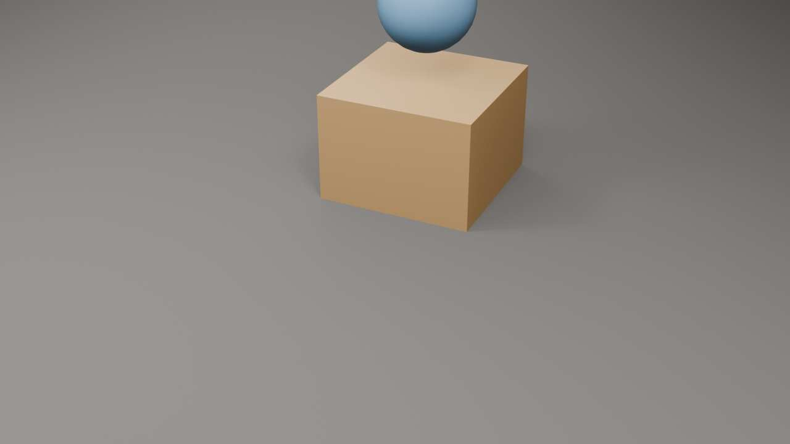
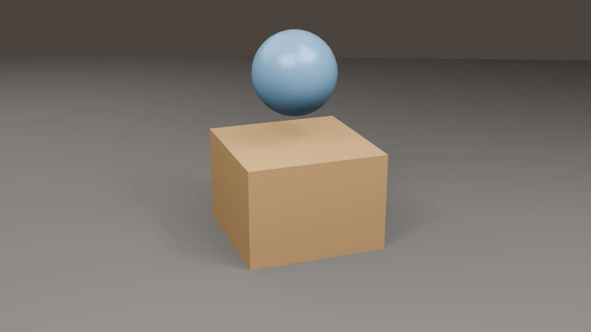
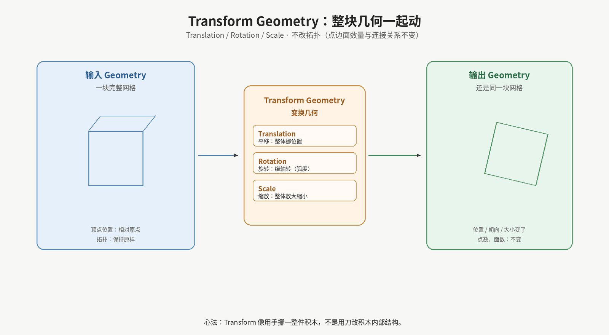
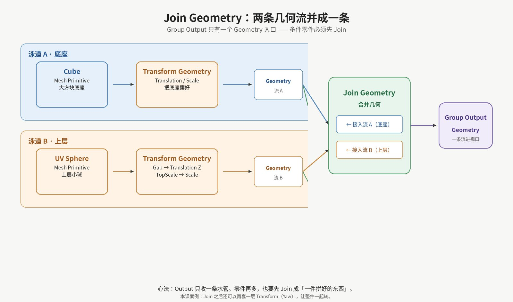
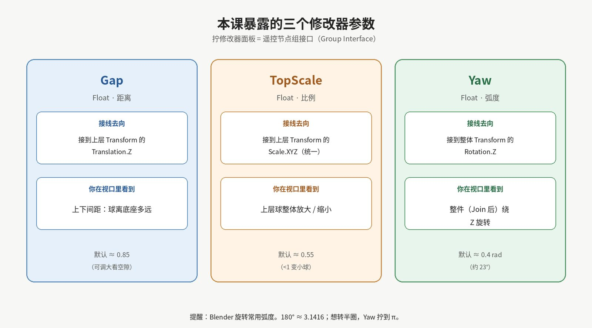

衔接说明
第 1 课你已经会：给物体挂 Geometry Nodes 修改器、打开 Geometry Node Editor、用 Cube 生成网格、把 Size 暴露到修改器面板。
今天不讲 Field（场），也不讲 Instance on Points。我们只做两件「积木级」的事：
整块挪动（Transform Geometry），以及 把两块拼成一件（Join Geometry）。
目标软件：Blender 5.2 LTS。节点名一律用 英文官方名，旁边用中文解释。
学完这一课，你应该能自信地说出并亲手做到：
本课故意不讲： Field、Instance on Points、Set Position 逐点挪动、Realize Instances。那些会在后面的课出现。
第 1 课像学会「用打印机打出一块积木」。
可动效 Logo、小场景、标题底座……几乎从来不是一块积木搞定。
你会很快碰到两件很具体的事：
Transform 负责「摆」，Join 负责「拼」。
学完这两个，你就能搭出今天的极简 Logo 底座：暖色大方块 + 上方蓝球，像一个会呼吸的品牌底座草稿。
请先下载并打开案例文件：
案例文件：L02_transform_and_join.blend
场景主物体名：L02_Transform_Join。
节点组同名：L02_Transform_Join。
选中物体，看 Modifier Properties：
| 参数 | 默认大约 | 你拧它时会发生什么 |
|---|---|---|
| Gap | 0.85 | 上层球沿 Z 升高 / 降低（上下间距） |
| TopScale | 0.55 | 上层球整体变大 / 变小 |
| Yaw | 0.4 | 整件（方块+球）绕 Z 旋转；单位是 弧度（0.4 ≈ 23°） |
先拧三下玩一会儿。玩完再往下读——你会带着画面感听概念。
案例渲染参考（Eevee 棚拍光，保持原样，未做美化；可当作「视口结果」对照）：


说明：这两张是案例文件用相机渲染出来的参考图，不是手工 P 过的宣传图。你本机视口角度不同、主题不同，颜色和阴影略有差别完全正常。
请先看概念图：

Transform Geometry = 把整块几何当成一件积木，用手挪、转、放大缩小。
它 不改 积木内部结构（拓扑），只改「这件东西在空间里怎么放」。
| 英文插座 | 中文 | 直观理解 |
|---|---|---|
| Translation | 平移 | 往哪挪：XYZ 三个方向的位移 |
| Rotation | 旋转 | 怎么转：在几何节点里通常是 欧拉角，单位弧度 |
| Scale | 缩放 | 放大还是缩小：可分轴，也可三轴同一数值 |
Blender 几何节点的旋转，默认按 弧度 思考最省事：
| 角度 | 约等于弧度 |
|---|---|
| 90° | π/2 ≈ 1.5708 |
| 180° | π ≈ 3.1416 |
| 360° | 2π ≈ 6.2832 |
案例默认 Yaw = 0.4，大约 23°，只是让 Logo 稍微「扭」一点，不至于正对相机太死板。
请看泳道图：

Group Output 只收一条 Geometry 水管。
零件再多，也要先用 Join Geometry 并成「一件拼好的东西」，再交给 Output。
本课案例就是两条泳道：
Cube →（可选材质）→ Transform Geometry → 流 A UV Sphere →（可选材质）→ Transform Geometry（Gap / TopScale）→ 流 B 流 A + 流 B → Join Geometry →（可选再 Transform 做 Yaw）→ Group OutputJoin 节点在 Blender 5.x 里是一个 可多次接入的 Geometry 多输入：你把两根（或更多根）Geometry 线都拖到它的 Geometry 入口上即可。

| 参数 | 接到哪里 | 视觉效果 |
|---|---|---|
| Gap | 上层 Transform 的 Translation.Z | 球离底座多远 |
| TopScale | 上层 Transform 的 Scale.X/Y/Z（同一值） | 球整体大小 |
| Yaw | Join 之后 那层 Transform 的 Rotation.Z | 整件一起绕竖轴转 |
为什么 Yaw 放在 Join 之后？
因为我们想要「方块和球锁在一起转」，而不是只转球、底座不动。
先拼，再整体转——这个顺序本身就是动效思维。
下面假设你已会第 1 课的：Add Modifier → Geometry Nodes、打开 Geometry Node Editor、Shift+A 加节点。
只把 本课新增 的步骤写细。
L02_Transform_Join（可与案例一致，方便对照）。 Gap（默认 0.85）TopScale（默认 0.55） Yaw（默认 0.4）。 如果你的结果和案例方向差 90°，多半是相机角度或 Yaw 正负不同——以「参数是否联动正确」为准，不必像素级对齐。
打开案例节点组 L02_Transform_Join，从左到右可以按框来读：
| 区域 | 主要节点（英文名） | 职责 |
|---|---|---|
| 底座框 | Cube → Set Shade Smooth → Set Material → Transform Geometry | 生成底座并摆好 |
| 上层框 | UV Sphere → Set Shade Smooth → Set Material → Transform Geometry | 生成上层；Gap / TopScale 打进这里 |
| 汇合框 | Join Geometry → Transform Geometry（Yaw） | 先拼再整体转 |
| 两端 | Group Input / Group Output | 暴露参数；输出最终几何 |
| 辅助 | Combine XYZ ×3 | 把单个 Float 填进向量的某一个分量 |
特意没有做的事：
场景里还有一个深色地面和三盏 Area 灯，只为渲染参考好看；它们不是节点树的一部分。
只拧参数
把 Gap 调到 0.2 和 2.0；TopScale 调到 0.2 和 1.2；Yaw 调到 0 和 1.57（约 90°）。用嘴巴说出每一次视口变化对应哪条连线。
换上层基本体
把 UV Sphere 换成 Cylinder（圆柱）或 Ico Sphere。
Transform / Join / 三个参数的逻辑应保持不变——你换的是「水源」，不是「水管结构」。
（可选）错位摆放
给上层 Transform 的 Translation 不只接 Z：让 X 或 Y 也有一个小偏移，做「球不在正中」的错位 Logo。
你可以再暴露一个 OffsetX，但不是必须。
（可选）颜色
没有材质也合格；有材质只是为了上下两件更好认。
第 3 课会继续在「看得懂、搭得稳」上加一块：
怎么读节点编辑器 —— 插座颜色、连线、Viewer（查看器）当手电筒，以及如何快速确认「这一截水管里现在流着什么」。
仍然把 Field 深水留到更后面；我们先把空间变换与合流用熟。
| 类型 | 路径 |
|---|---|
| 课件 | lessons/L02_transform_and_join.md |
| 案例 | blends/L02_transform_and_join.blend |
| 配图 | assets/L02/（视口参考 ×2 + 概念图 ×3） |
| 脚本 | scripts/create_L02.py、scripts/gen_l02_illustrations.py |
Google Drive 同步文件夹：课程根目录 GeometryNodesCourse（与云电脑同结构）。
L02 · Transform Geometry & Join Geometry · Blender 5.2 LTS